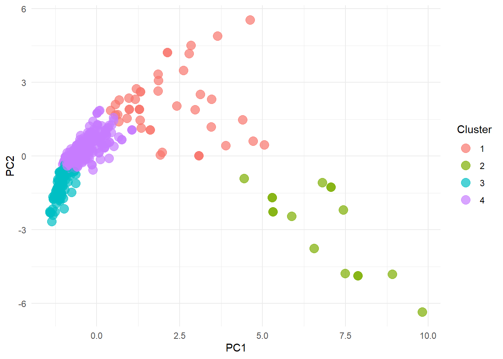

17. 비대면 교육 및 예약 서비스를 중심으로 한 브랜드 제품 유통 및 소프트웨어 설계 산업
18. 블록체인 기반 가상자산 관리와 통합 거래 커뮤니티 산업
19. 전문 제조와 공급을 통한 친환경 테크놀로지 산업
20. 다양한 매체를 통한 콘텐츠 제작 및 영상 스트리밍 산업
지식 구조의 Edge 영역: Biz-Tech space
지식 구조의 Edge 영역: Biz-Tech space
산업별 Biz-Tech space
1. 헬스케어, 식품, 화장품 커머스 및 기술 서비스 산업
2. 신약 개발과 디지털 기술 활용의 면역 및 난치질환 치료 산업
3. 스마트 제조 기술과 인공지능 활용의 판매 및 전기 인프라 산업
4. 스마트 소프트웨어와 위치 기반 숙박 및 여행 서비스 중개 산업
5. 웨어러블과 의약품 기반 브랜드 커머스 및 판매 산업
6. 온라인 결제, 커머스와 자율주행 기술 산업
7. 빅데이터 분석 및 보안 기반 사업 솔루션 산업
8. 인공지능 및 IOT 기반 교육과 유통 콘텐츠 시스템 산업
9. 패션, 뷰티 및 헬스 중심의 디지털 콘텐츠 및 정보 시스템 산업
10. 글로벌 정보 및 데이터 관리를 위한 IT 및 이커머스 컨설팅 산업
11. 디지털 기반 온·오프라인 커뮤니티 및 마케팅 지원 산업
12. 차량관리, 로봇 기술, 진단 제품 제조 및 미디어 산업
13. 메타 교육, 쇼핑 및 용품 관리, 영어 방문서비스 산업
14. 온라인 공유 및 협업 중심의 비교-구매 커머스
15. 디지털 이커머스, 반려동물 관리, IOT 제조 및 부동산 중개 스타트업 산업
16. 모바일 게임과 VR을 활용한 맞춤형 미디어 및 공간 기획 산업
17. 비대면 교육 및 예약 서비스를 중심으로 한 브랜드 제품 유통 및 소프트웨어 설계 산업
18. 블록체인 기반 가상자산 관리와 통합 거래 커뮤니티 산업
19. 전문 제조와 공급을 통한 친환경 테크놀로지 산업
20. 다양한 매체를 통한 콘텐츠 제작 및 영상 스트리밍 산업
Biz-Tech space 에서 연결, 가중연결, 매개, 위세, 근접 중심성
연결 (Degree): 그래프에서 한 노드가 직접적으로 연결된 다른 노드의 수: 그래프에서 해당 노드의 중요성을 간접적으로 나타낼 수 있음
가중연결 (Weighted Degree): 가중 그래프에서 노드의 가중연결은 연결된 간선의 가중치의 합을 나타냄: 간선의 ‘강도’ 또는 ’중요성’을 고려한 노드의 연결 정도
매개 중심성 (Betweenness Centrality): 그래프 내의 모든 노드 쌍 간의 최단 경로에 얼마나 자주 등장하는지를 나타냄: 높은 매개 중심성을 가진 노드는 정보의 흐름에 있어 ‘다리’ 역할
위세 중심성 (Eigenvector Centrality): 노드의 위세 중심성은 해당 노드에 직접적으로 연결된 다른 노드들의 중요성을 함께 고려한 것: 중요한 노드들과 많이 연결된 노드가 더 높은 위세 중심성을 가짐
근접 중심성 (Closeness Centrality): 노드의 근접 중심성은 해당 노드가 그래프 내의 다른 모든 노드에 얼마나 ‘가깝게’ 위치해 있는지를 나타냄: 여기서 ’가깝다’는 것은 노드 간의 경로 길이를 의미하며, 즉 노드 간의 거리가 짧을수록 높은 근접 중심성을 가집니다.
Welcome! Want to learn more? See two factoextra-related books at https://goo.gl/ve3WBa
library(FactoMineR)# Standardize the datadata_std <-scale(tag_centrality[, -1]) # Exclude the Id column for PCA# Perform PCApca_res <-prcomp(data_std, center =TRUE, scale. =TRUE)# Determine the number of principal components to keepfviz_eig(pca_res)
# Use the scores of the first few principal components for clustering# Here we assume the first two principal components are usedpca_scores <-data.frame(pca_res$x[, 1:3])# Determine the optimal number of clustersset.seed(123) # for reproducibilityfviz_nbclust(pca_scores, kmeans, method ="wss")
# Assuming the optimal number of clusters is found to be 4 (for example)km_res <-kmeans(pca_scores, centers =4, nstart =25)
# Append the cluster assignment to your original datatag_centrality$cluster <- km_res$cluster# Visualize the clustersggplot(pca_scores, aes(x = PC1, y = PC2, color =as.factor(km_res$cluster))) +geom_point(alpha =0.7, size =4) +theme_minimal() +labs(color ="Cluster")

# Visualize the difference in variables among clusters using the original datadata_long <-gather(tag_centrality, key ="variables", value ="value", -Id, -cluster)ggplot(data_long, aes(x =as.factor(cluster), y = value, fill =as.factor(cluster))) +geom_boxplot() +facet_wrap(~variables, scales ="free_y") +theme_bw() +labs(fill ="Cluster")
# Librarylibrary(fmsb)# Assuming 'data' is your existing data frame and it already has a 'cluster' column from the k-means result# We need to normalize the data firstdata_normalized <- tag_centrality %>%select(-Id, -cluster) %>%mutate_all(function(x) (x -min(x)) / (max(x) -min(x)))# We will now calculate the average of each variable for each cluster to plot on the radar chartdata_normalized$cluster <- tag_centrality$cluster # Add the cluster assignment to the normalized datadata_normalized